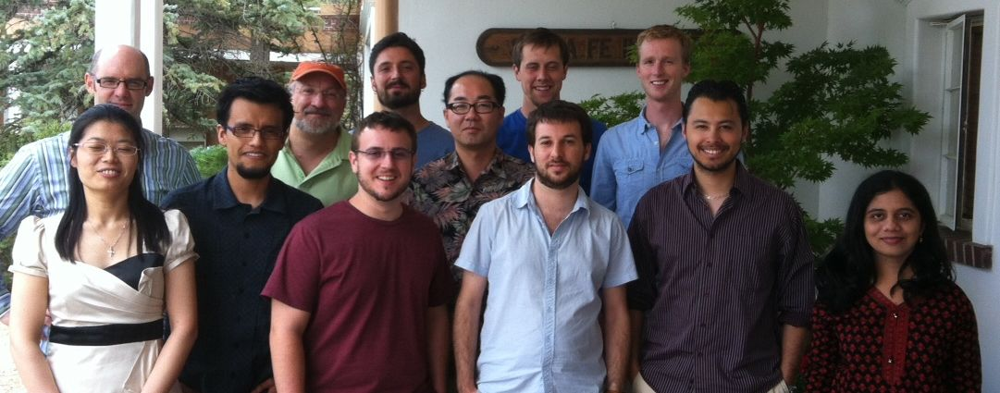

2012 Graduate Workshop in Computational Social Science Modeling and Complexity
Santa Fe Institute
, 17 -- 30 June, 2012

Program Announcement
Students
Faculty
Reading List
Schedule
Homework Problem
Student Projects
2011 GWS Wiki
Return to
Computational Economics
page.
John H. Miller
, miller@santafe.edu.